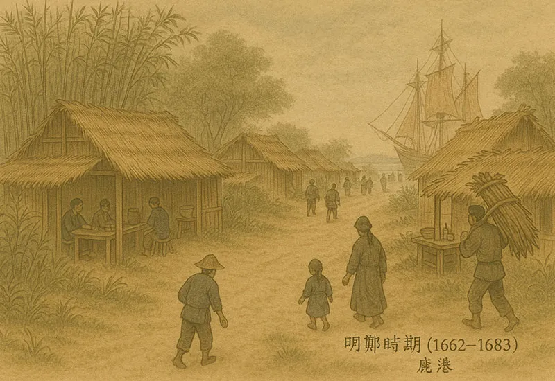
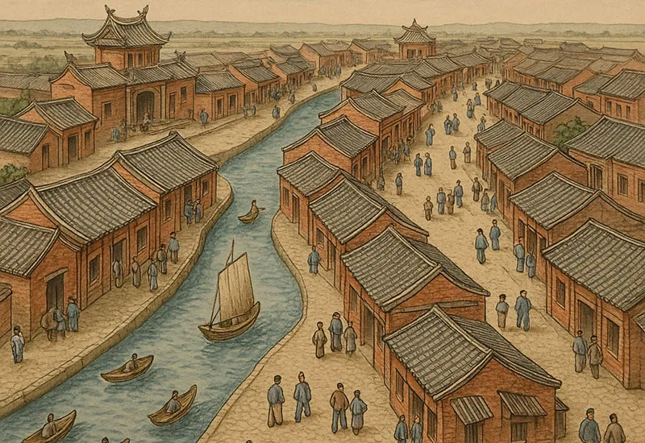
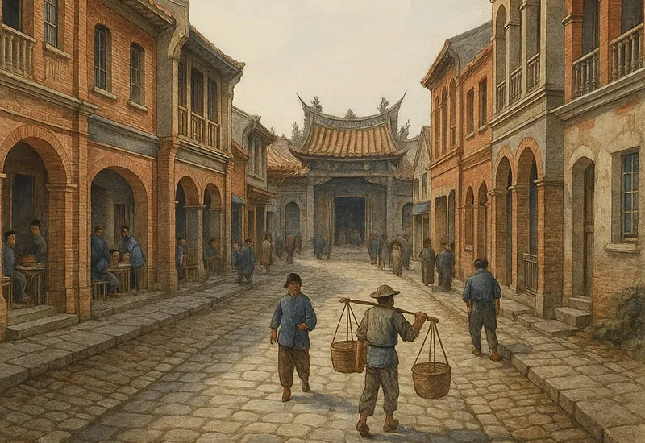
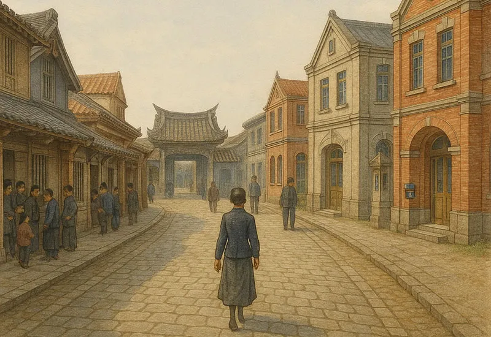
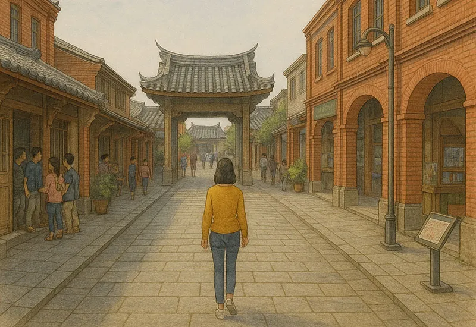

明鄭時期的鹿港（1662–1683）
鹿港為初期移墾據點，漢人陸續渡海拓殖，聚落沿海濱與水道形成。街道尚未規劃清晰，多為泥地或小徑，構築以草寮與竹木為主。鹿港在此時為通商據點的雛形，聚落逐漸萌芽。

清領前期的鹿港 （1683–1842）
清朝治理下，鹿港港務興盛，發展成「一府二鹿三艋舺」的重要港市。市區形成文武廟街、埔頭街等商業街廓，街道多依水陸路線延展。傳統街屋、廟宇逐漸建成，街道鋪設以砂石為主，商業與移民快速成長。

清領後期的鹿港 （1842–1895）
受對外貿易與西方影響逐增，鹿港仍繁榮一時，但港口逐漸淤積，商業重心移轉他地。街區風貌穩定成熟，巷弄如瑤林街、牛墟巷等活絡，木構磚造街屋成主流。傳統風格逐漸受到洋風與新式結構影響，社會氛圍也轉趨多元。

日治時期的鹿港 （1895–1945）
日本接管後進行都市規劃與基礎建設改革，鹿港雖非開發重點，仍保留大量傳統巷弄。部分街道引進洋風建築元素與現代市政配置，街屋風貌混合日式與本地元素。學校、派出所等設施設立，行政管理現代化。

民國時期的鹿港（1945–今）
鹿港從港市轉型為文化保存與觀光小鎮，原有巷弄多保留完整。石板路修復、古厝再生與文創進駐活化街區空間。現代建築與導覽系統融入歷史場域，居民與遊客共構慢活、懷舊且有溫度的城市氛圍。
